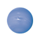

ఖగోళ శాస్త్రజ్ఞుడు : నియమాలు
- మీకు 10 ఆధారాలు, ఒకటి ఒకసారి ఇవ్వబడుతుంది.
- ఒక్కో ఆధారం జాగ్రత్తగా చదవండి మరియు ఇది గ్రహం వర్ణిస్తుందో గుర్తించండి.
- సరైన గ్రహం క్లిక్ చేయండిసబ్మ మరియు సబ్మిట్ క్లిక్ చేయండి
- మీరు సరిగ్గా జవాబిస్తే, మీరు పొందవచ్చు ఒక మూలకం లేదా సమ్మేళనం.
- మీరు కనుగొనే అంశాలను, మెరుగైన అవకాశాలు గెలుచుకోవాలి.
ఆధారం:8
ఇది సౌర కుటుంబంలో రెండవ అతిపెద్దది అయినా, ఈ గ్రహం నీటి పైన తేలుతుంది. అమ్మోనియా (NH3)సేకరించడానికి ఈ గ్రహాన్ని సందర్శించండి.
సరియైన గ్రహాన్ని క్లిక్ చేయండి మరియు మీ జవాబు సరైందో కాదో చూడటానికి సబ్మిట్ క్లిక్ చేయండి.





అది సరియైనది కాదు.
అది సరియైనది కాదు.